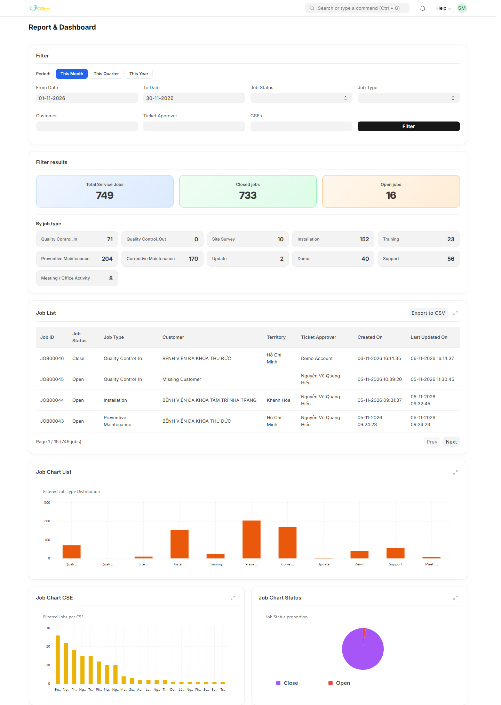
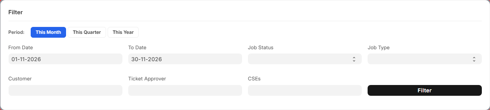
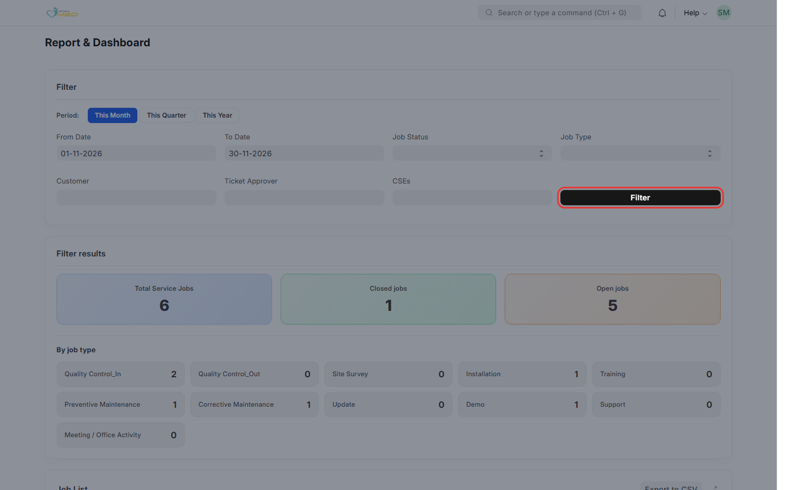
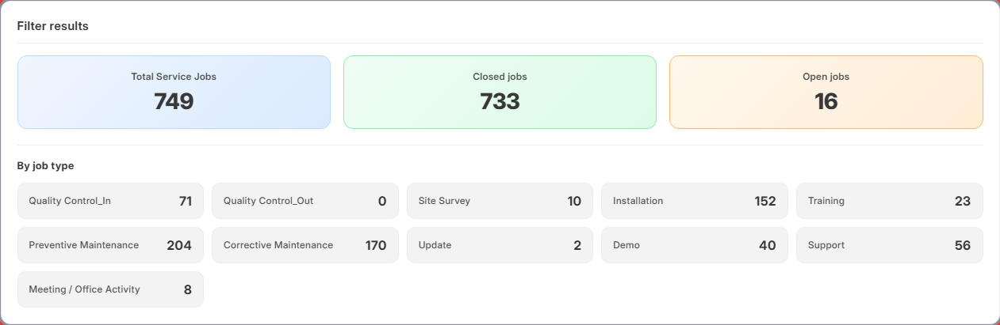
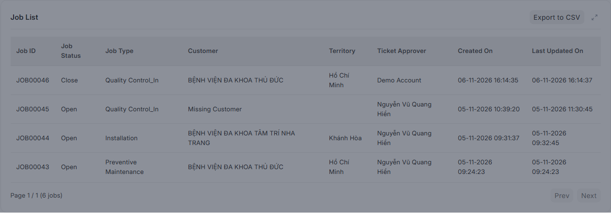
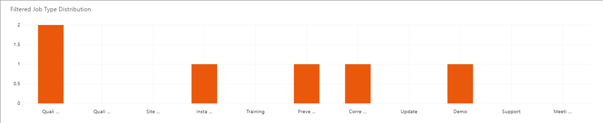
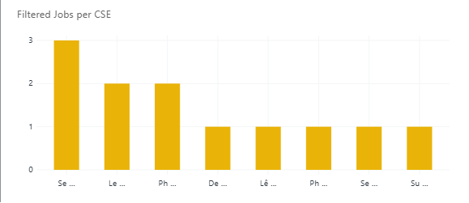
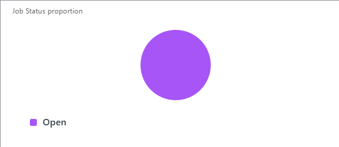

Mục đích
Service Job Report (tiêu đề trên màn hình: Report & Dashboard) giúp lãnh đạo và trưởng nhóm dịch vụ theo dõi Service Job (phiếu công việc dịch vụ) trong khoảng thời gian và theo khách hàng, kỹ sư phụ trách (CSE), trạng thái và loại công việc.
Trang gồm: Filter (full width), Filter results (thẻ KPI + By job type), Job List (có Export to CSV), và ba biểu đồ: Job Chart List, Job Chart CSE, Job Chart Status.
Service Job trên báo cáo
Mỗi dòng số liệu trên báo cáo tương ứng một phiếu Service Job (một mã Job ID). Loại việc (Job Type) và trạng thái (Open / Close) nằm ngay trên phiếu đó.
Trên mỗi phiếu, các trường quan trọng khi đọc số liệu:
| Trường | Vai trò trên báo cáo |
|---|---|
| Job Type | Loại công việc gắn trực tiếp trên Service Job (PM, Installation, Support, …). Dùng trong lọc, lưới By job type và biểu đồ Job Chart List. |
| Job Status | Open / Close — thẻ KPI và biểu đồ Job Chart Status. |
| Customer (trên job) | Mỗi Service Job chọn một khách hàng (trong danh sách Customers của Ticket). Bộ lọc Customer trên báo cáo áp dụng theo trường này trên job, không theo toàn bộ danh sách khách hàng trên Ticket. |
| Ticket Approver | Người duyệt trên Ticket — cột Job List và bộ lọc cùng tên. |
| CSEs (trên job) | Danh sách kỹ sư tham gia job; lọc CSEs và biểu đồ Job Chart CSE (một job có nhiều CSE có thể được tính cho từng người). |
| Created On | Ngày tạo phiếu — dùng cho lọc kỳ From/To Date. |
Chưa biết cách tạo phiếu trên ERP? Xem Support — Ticket, Service Job, Service Time.
Trước khi bắt đầu
- Đã đăng nhập ERP
- Tài khoản có vai trò iMED Service Leader hoặc iMED Service Manager
- Đã có Service Job trên hệ thống (nên có Job Type để thấy đủ trên biểu đồ)
Các bước thực hiện
Bước 1: Mở Service Job Report
Trên ERP, nhấn Ctrl + G (hoặc ô tìm kiếm trên cùng), gõ Service Job Report rồi chọn trang Report & Dashboard.

Bước 2: Thiết lập bộ lọc
Khối Filter nằm trên cùng. Chọn nhanh This Month / This Quarter / This Year hoặc From Date / To Date. Mặc định thường là tháng hiện tại.

| Thành phần | Mô tả |
|---|---|
| Kỳ thời gian (preset / tùy chỉnh) | Lọc theo ngày tạo Service Job (Created On), không theo ngày cập nhật cuối. |
| Customer | Một hoặc nhiều khách hàng (cơ sở y tế). |
| Ticket Approver | Người duyệt trên Ticket gắn với job (Trưởng nhóm / Quản lý dịch vụ). |
| CSEs | Lọc job có kỹ sư nằm trong trường CSEs trên Service Job (chọn nhiều). |
| Job Status | Open hoặc Close. |
| Job Type | Loại công việc trên Service Job (PM, Installation, …). Khi chọn, chỉ job có đúng loại đó được tính và hiển thị. |
| Filter (nút) | Áp dụng bộ lọc cho toàn bộ chỉ số, biểu đồ và Job List (trang 1). |
Bước 3: Nhấn Filter
Sau khi chỉnh bộ lọc, nhấn Filter. Hệ thống tải lại metrics, biểu đồ và danh sách job.

Bước 4: Đọc Filter results
Ngay dưới bộ lọc, khối Filter results hiển thị ba thẻ Total Service Jobs, Closed jobs, Open jobs và lưới By job type.

Chi tiết từng dòng số liệu: xem mục Giải thích metrics.
Bước 5: Xem Job List
Bảng Job List liệt kê từng Service Job: Job ID, Job Status, Job Type, khách hàng, territory, Ticket Approver, ngày tạo và cập nhật.

- Dùng Prev / Next khi có nhiều hơn 50 phiếu.
- Góc phải tiêu đề Job List: Export to CSV và biểu tượng mở rộng bảng toàn màn hình.
Bước 6: Xuất CSV (tùy chọn)
Chi tiết quy trình: mục Xuất danh sách Job ra CSV.
Bước 7: Xem biểu đồ
Ba biểu đồ phía dưới luôn phản ánh cùng bộ lọc với Filter results. Nhấn biểu tượng mở rộng trên từng thẻ để xem fullscreen.
Job Chart List — cột theo từng loại Job Type.

Job Chart CSE — cột theo CSE gán trên job.

Job Chart Status — biểu đồ tròn Open / Close (theo job có Job Type hợp lệ).

Giải thích cách đếm và cách đọc: mục Giải thích biểu đồ.
Xuất danh sách Job ra CSV
Nút Export to CSV trên tiêu đề Job List tải toàn bộ phiếu Service Job khớp bộ lọc (không chỉ 50 dòng đang xem), dạng file CSV mở được trong Excel.
- Nhấn Export to CSV → hộp thoại Export Job List.
- Đọc dòng số lượng (ví dụ X jobs ready for export (of Y matching)). Nếu không có job → Download CSV bị tắt.
- Xem trước tối đa 6 dòng đầu trong bảng nhỏ trong hộp thoại.
- Nhấn Download CSV — trình duyệt lưu file tên dạng service-jobs-YYYY-MM-DD-YYYY-MM-DD.csv (theo From Date / To Date đang chọn).
- Cancel, nút × hoặc nhấn nền tối bên ngoài để đóng không tải file.
Cột trong file (cùng thứ tự với Job List): Job ID, Job Status, Job Type, Customer, Territory, Ticket Approver, Created On, Last Updated On. Tiếng Việt trên file dùng định dạng ngày giờ Desk; file mã UTF-8 có BOM để Excel đọc đúng chữ Việt.
Giới hạn: Tối đa 10.000 phiếu mỗi lần tải. Nếu kết quả lọc nhiều hơn, hệ thống cảnh báo và chỉ xuất 10.000 dòng đầu — hãy thu hẹp kỳ ngày hoặc bộ lọc (Customer, CSEs, Job Type, …) rồi xuất lại.
Không xuất: KPI Filter results và biểu đồ — chỉ danh sách job.
Giải thích metrics (Filter results)
Khối Filter results tóm tắt sau khi bạn nhấn Filter. Mọi con số đều đếm Service Job (mỗi Job ID tối đa một lần), trừ khi ghi chú riêng cho biểu đồ CSE. Kỳ lọc theo ngày tạo phiếu.
Thẻ KPI (ba thẻ trên)
Total Service Jobs (thẻ xanh)
Trả lời: “Có bao nhiêu phiếu Service Job thỏa bộ lọc?” Mỗi phiếu đếm một lần, kể cả khi chưa chọn Job Type.
Open jobs (thẻ cam)
Số phiếu có Job Status = Open.
Closed jobs (thẻ xanh lá)
Số phiếu có Job Status = Close. Open + Closed thường bằng phần lớn Total Service Jobs.
By job type (lưới dưới KPI)
Mỗi ô = số Service Job có Job Type tương ứng (trong 11 loại chuẩn). Job không có loại hoặc loại ngoài danh mục không cộng vào lưới. Tổng các ô thường ≤ Total Service Jobs. Loại không phát sinh hiển thị 0.
| Job Type (trên màn hình) | Hiểu đơn giản |
|---|---|
| Quality Control_In | Kiểm tra chất lượng khi nhập kho / trước bàn giao |
| Quality Control_Out | Kiểm tra chất lượng trước khi xuất / giao khách |
| Site Survey | Khảo sát hiện trường trước lắp đặt hoặc triển khai |
| Installation | Lắp đặt thiết bị tại khách hàng |
| Training | Đào tạo sử dụng cho nhân viên khách hàng |
| Preventive Maintenance | Bảo trì định kỳ (PM) |
| Corrective Maintenance | Sửa chữa / bảo trì sự cố (CM) |
| Update | Cập nhật phần mềm, firmware hoặc cấu hình |
| Demo | Demo sản phẩm cho khách |
| Support | Hỗ trợ kỹ thuật (không thuộc các loại trên) |
| Meeting / Office Activity | Họp nội bộ, công việc văn phòng liên quan dịch vụ |
Giải thích biểu đồ
Ba biểu đồ luôn phản ánh đúng bộ lọc bạn vừa áp dụng (cùng với Filter results và Job List). Rê chuột lên cột hoặc miếng bánh để xem số cụ thể. Không có dữ liệu → chữ No data for chart.
Job Chart List — cột theo loại công việc
Loại biểu đồ: cột đứng.
Ý nghĩa: So sánh số phiếu Service Job theo từng Job Type — khớp lưới By job type.
Cách đọc: Cột cao nhất = loại công việc có nhiều phiếu nhất trong kỳ lọc. Trục ngang liệt kê đủ 11 loại; loại không có job hiển thị cột 0.
Khi nào hữu ích: Họp định kỳ xem team đang tập trung PM hay CM, cân bằng Installation vs Support.
Job Chart CSE — cột theo CSE trên job
Loại biểu đồ: cột đứng.
Ý nghĩa: Đếm Service Job theo từng kỹ sư trong trường CSEs của phiếu. Một job gán hai CSE → cộng 1 cho mỗi người. Chỉ job có Job Type hợp lệ và có danh sách CSEs.
Cách đọc: Không có thẻ KPI tương ứng; dùng để so sánh số phiếu giữa các kỹ sư. Khác với lọc / cột Ticket Approver (người duyệt Ticket).
Khi nào hữu ích: Xem ai đang gánh nhiều job thực tế trên hiện trường.
Job Chart Status — tròn Open / Close
Loại biểu đồ: tròn (pie).
Ý nghĩa: Tỷ lệ phiếu Open / Close (job có Job Type hợp lệ).
Cách đọc: Thường gần với thẻ Open jobs / Closed jobs; có thể lệch nhẹ nếu có job Open/Close nhưng thiếu Job Type (có trên KPI, không vào pie).
Khi nào hữu ích: Nhìn nhanh tỷ lệ đóng/mở trên tập job đủ loại công việc.
Metrics và biểu đồ — đối chiếu nhanh
- Job Chart List = lưới By job type (cùng đếm job theo loại).
- Job Chart Status ≈ thẻ Open / Closed jobs (cùng đơn vị phiếu; pie có thể bỏ job thiếu Job Type).
- Job Chart CSE = job theo CSEs trên phiếu (một job có thể tính cho nhiều cột).
Phân quyền theo vai trò
| Vai trò | Truy cập Service Job Report |
|---|---|
| iMED Service Manager | Có — xem toàn bộ dữ liệu theo bộ lọc |
| iMED Service Leader | Có — xem toàn bộ dữ liệu theo bộ lọc |
| iMED Service User | Không — thông báo không được phép |
| Administrator | Có |
Chưa biết cách tạo phiếu trên ERP? Xem Support — Ticket, Service Job, Service Time.
Kết quả mong đợi
Sau khi nhấn Filter:
- Filter results, Job List (trang 1), và cả ba biểu đồ đồng bộ cùng một tập dữ liệu.
- Job List sắp xếp phiếu mới tạo trước; phân trang 50 phiếu/trang; CSV xuất cùng bộ lọc, tối đa 10.000 dòng.
- Nếu không có dữ liệu: metrics = 0; biểu đồ trống; bảng job không có dòng; xuất CSV không tải được file.
Xử lý sự cố thường gặp
| Triệu chứng | Nguyên nhân có thể | Cách xử lý |
|---|---|---|
| Không mở được trang | Tài khoản là iMED Service User hoặc thiếu quyền | Liên hệ quản trị gán Service Leader hoặc Service Manager |
| Số liệu không đổi | Chưa nhấn Filter | Chỉnh lọc rồi nhấn Filter; đợi tải xong |
| Tổng By job type < Total Service Jobs | Một số job chưa có Job Type hợp lệ | Bổ sung Job Type trên phiếu hoặc chấp nhận chênh lệch |
| Open/Close KPI ≠ pie chart | Pie bỏ job thiếu Job Type hợp lệ | Đọc mục Job Chart Status |
| Job Chart CSE trống | Job chưa gán CSEs hoặc thiếu Job Type | Cập nhật CSEs trên Service Job |
| Biểu đồ No data | Bộ lọc quá hẹp hoặc không có job đủ điều kiện | Mở rộng kỳ ngày hoặc nới bộ lọc |
| Trang job trống nhưng metrics > 0 | Đang ở trang pagination cuối sau khi thu hẹp lọc | Nhấn Filter lại (về trang 1) hoặc Prev về trang 1 |
| CSV ít dòng hơn tổng job trên màn hình | Chỉ xuất tối đa 10.000 job hoặc bộ lọc lúc xuất khác lúc Filter | Thu hẹp lọc; nhấn Filter; xuất lại. Kiểm tra cảnh báo truncation trong hộp thoại |
| Excel mở CSV lỗi font tiếng Việt | Mở bằng double-click không nhận UTF-8 | Trong Excel: Data → From Text/CSV và chọn UTF-8, hoặc mở bằng Google Sheets |
| Download CSV không bấm được | Không có job khớp lọc | Nới kỳ ngày / bộ lọc; nhấn Filter rồi thử lại |